Dirigintele de șantier reprezintă beneficiarul în raport cu constructorul: verifică calitatea execuției, participă la fazele determinante și întocmește cartea tehnică a construcției. Funcția se exercită numai pe baza autorizației emise de Inspectoratul de Stat în Construcții, iar legea o impune pentru categorii largi de lucrări — fără diriginte, recepția poate fi blocată.
În echipă avem diriginte de șantier autorizat de Inspectoratul de Stat în Construcții. Domeniile acoperite de autorizare vi le confirmăm când ne spuneți ce fel de lucrare aveți.
Când este obligatoriu. Legea impune asigurarea diriginției de șantier pentru categorii largi de lucrări, iar lipsa ei atrage sancțiuni și poate bloca recepția. Dacă nu sunteți sigur dacă lucrarea dumneavoastră intră în această categorie, trimiteți-ne autorizația de construire și vă spunem.
Dacă lucrarea include instalații de ridicat sau instalații sub presiune, putem acoperi și partea ISCIR — vedeți RSVTI și RVT.
Lucrări de-ale noastre, în ordinea în care se execută — de la săpătură până la betonul turnat, plus lucrări de infrastructură. Sunt exact etapele la care trebuie să fie cineva prezent, pentru că după ele nu se mai poate verifica nimic.

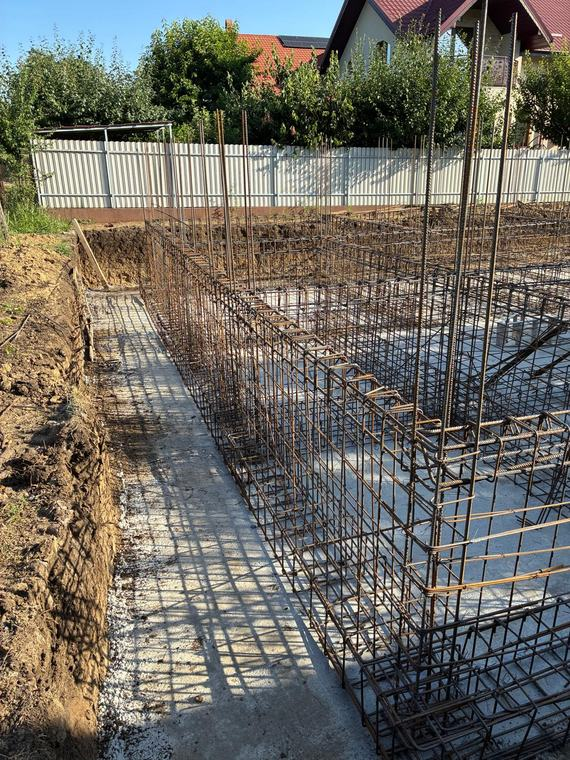
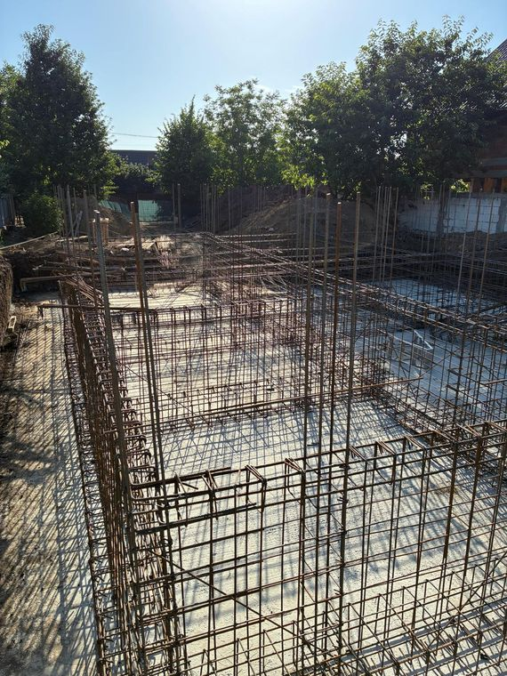
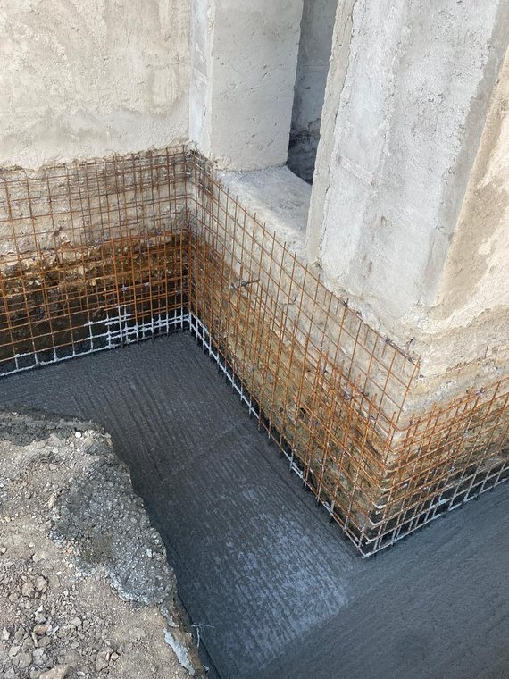
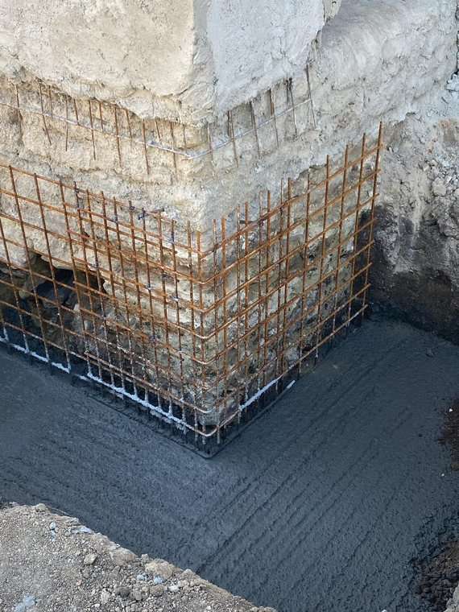

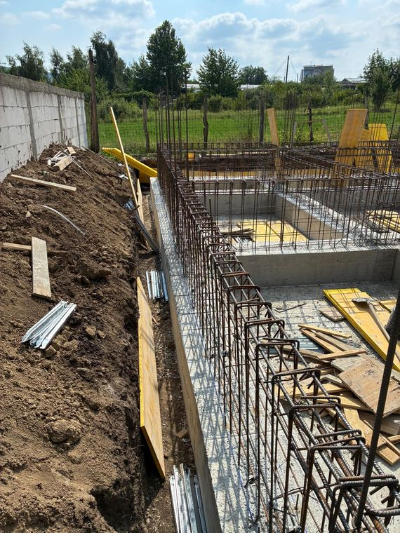
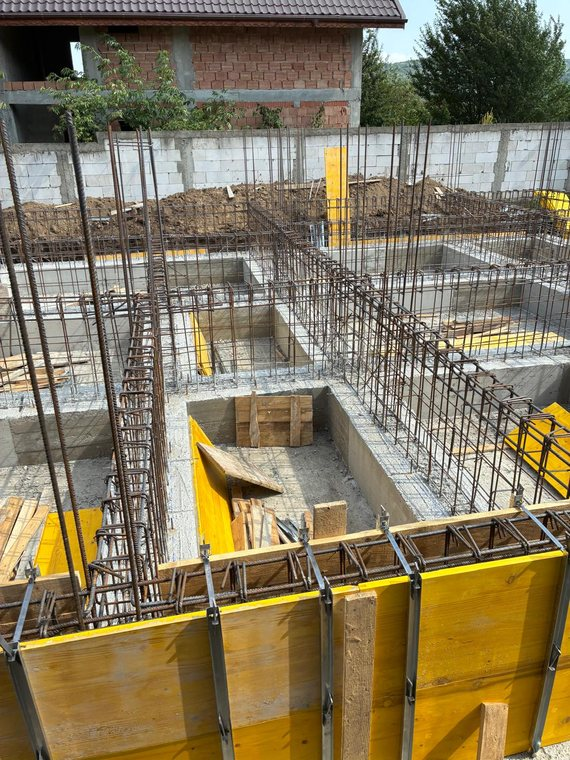
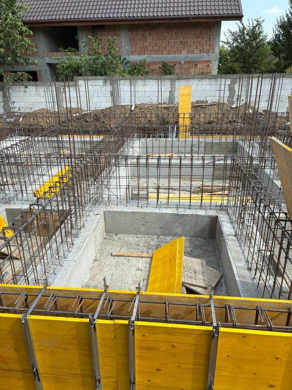
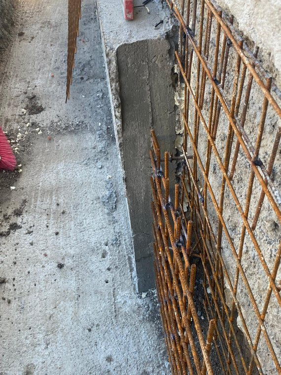
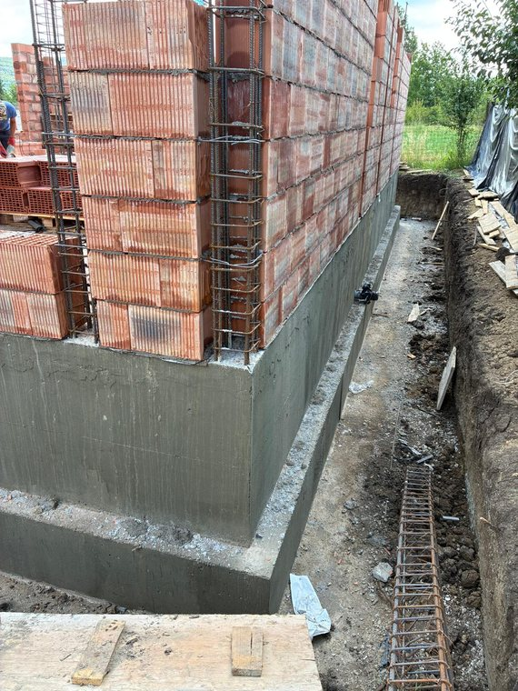
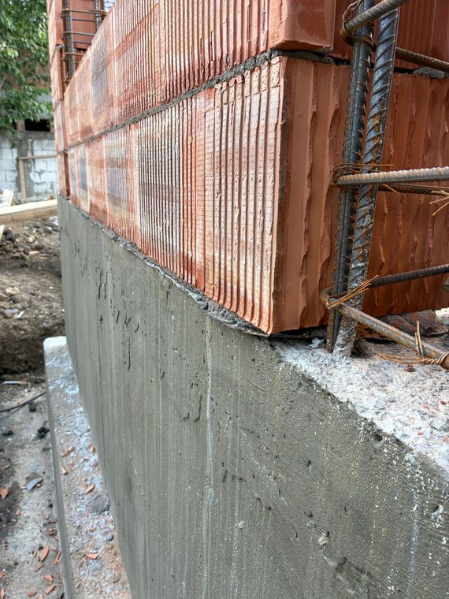
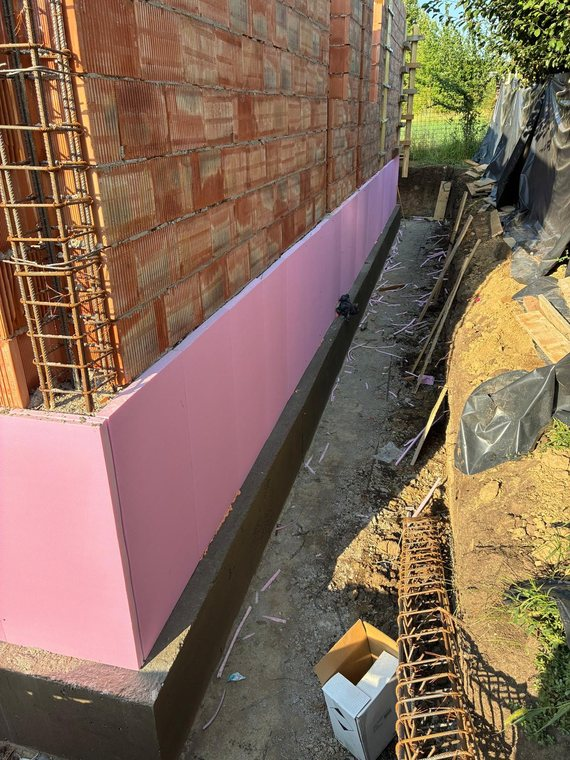
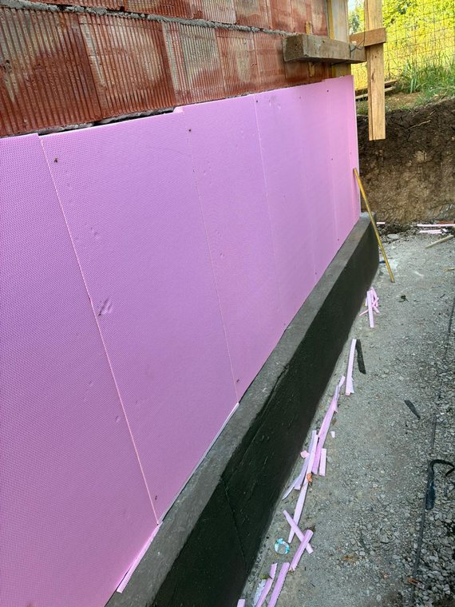
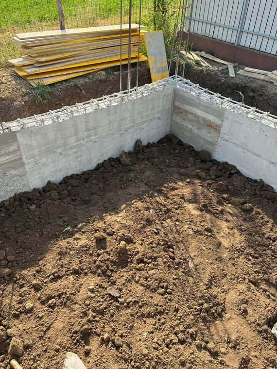
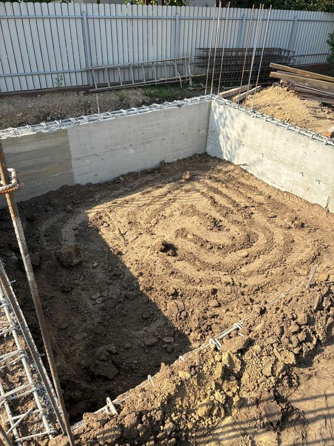
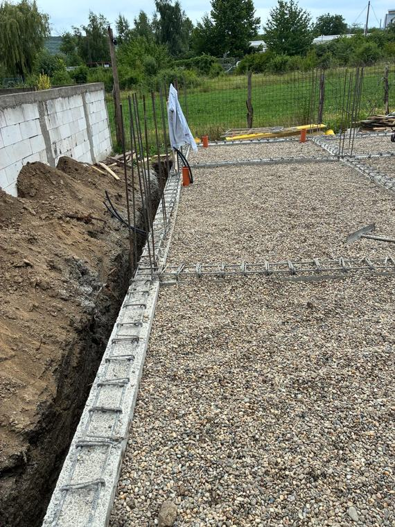
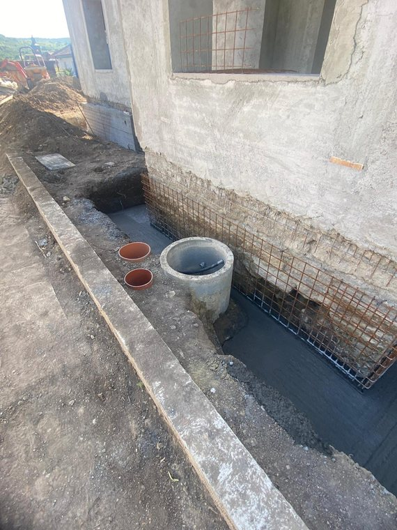
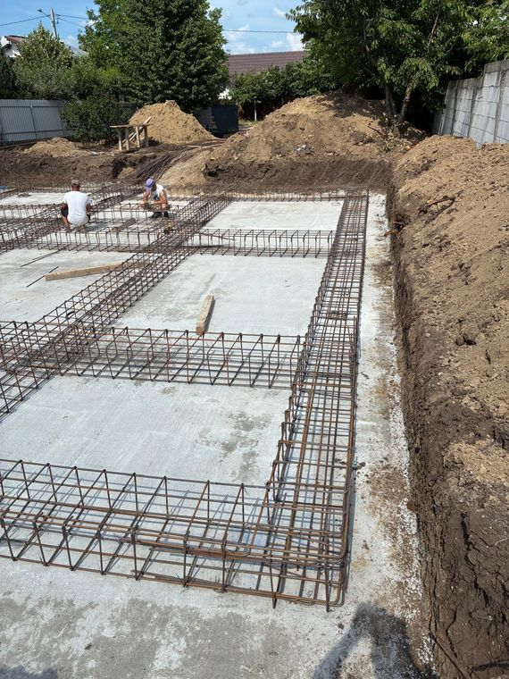


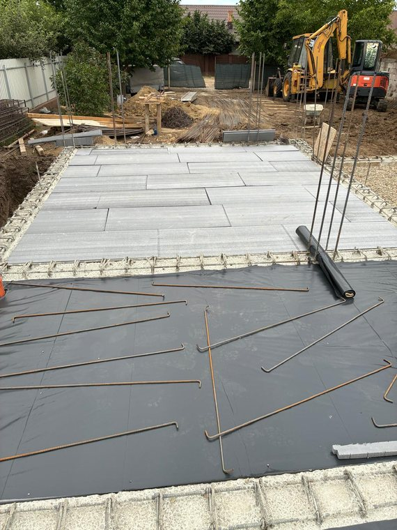
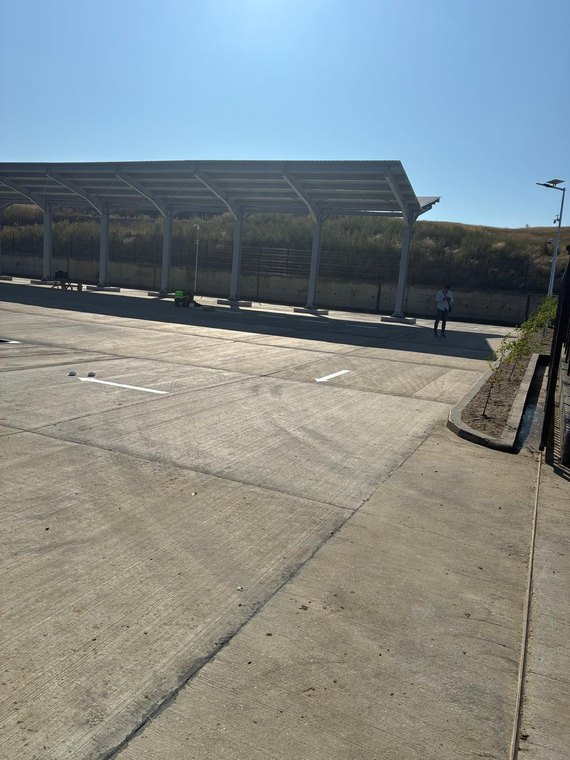
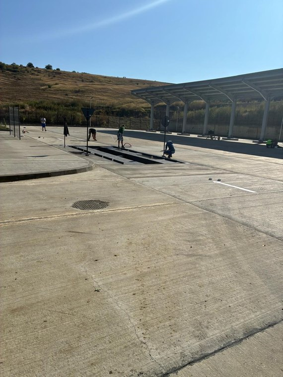
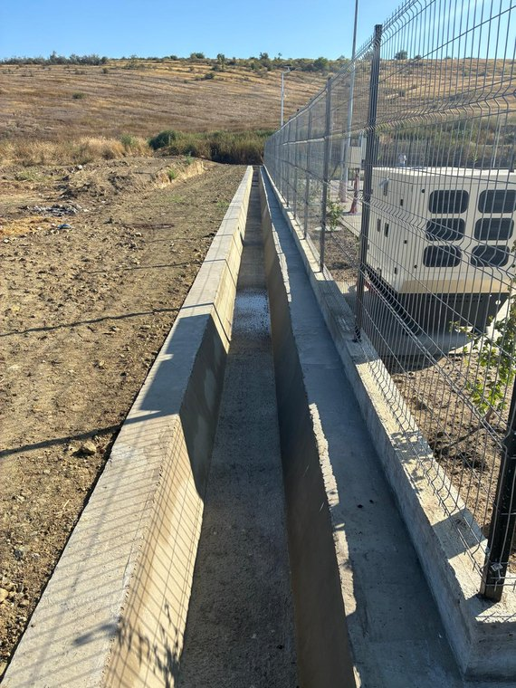
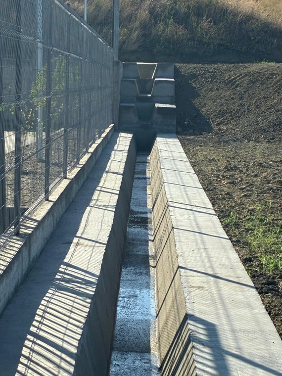
Spuneți-ne pe scurt ce aveți de construit sau de verificat — o simplă întrebare nu vă obligă la nimic.
Da — la recepție dosarul trebuie să fie complet, iar comisia semnează pe ce vede în acte. Ca diriginți, pregătim procesele-verbale, referatul dirigintelui și cartea tehnică și stăm lângă dumneavoastră la recepție, ca să nu semnați ce vi se pune în față.
Da: dacă proiectul autorizat are program de control cu faze determinante — și aproape toate îl au — obligația nu ține de mărimea casei. La o locuință obișnuită fazele sunt puține, iar noi le ținem calendarul, ca lucrarea să nu stea.
Nu la toate: ISC participă doar la fazele prevăzute în programul de control avizat, după categoria de importanță a construcției. La restul verificărilor participă proiectantul și dirigintele — adică noi, în numele dumneavoastră.
Formal, executantul anunță stadiul, iar convocarea pleacă în scris către toți factorii. În practică, dirigintele ține calendarul: urmărim graficul și facem convocările la timp, ca să nu se acopere nimic neverificat.
Onorariul depinde de tipul și complexitatea lucrării, de valoarea estimată și durata de execuție, de amplasament și de stadiul în care se află șantierul. Trimiteți-ne certificatul de urbanism sau proiectul autorizat și vă răspundem cu o ofertă concretă.